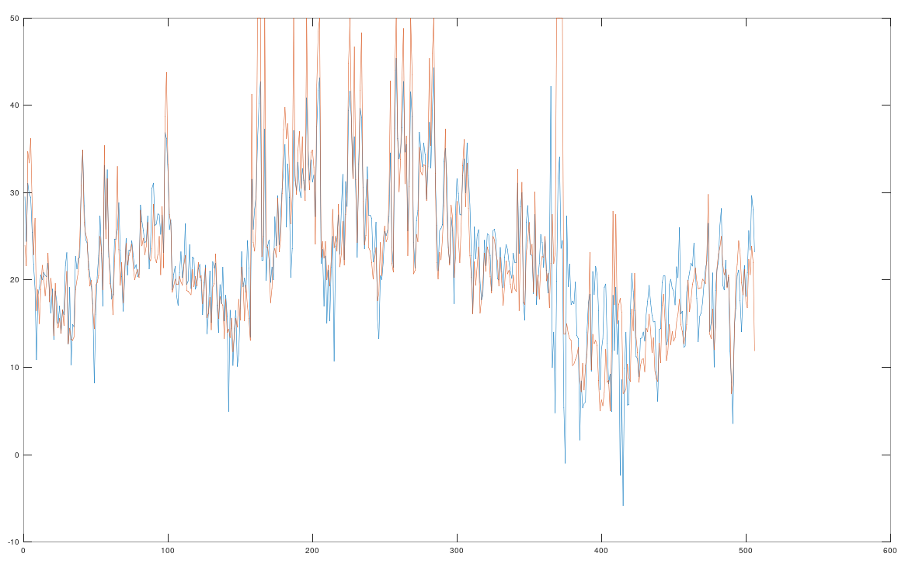
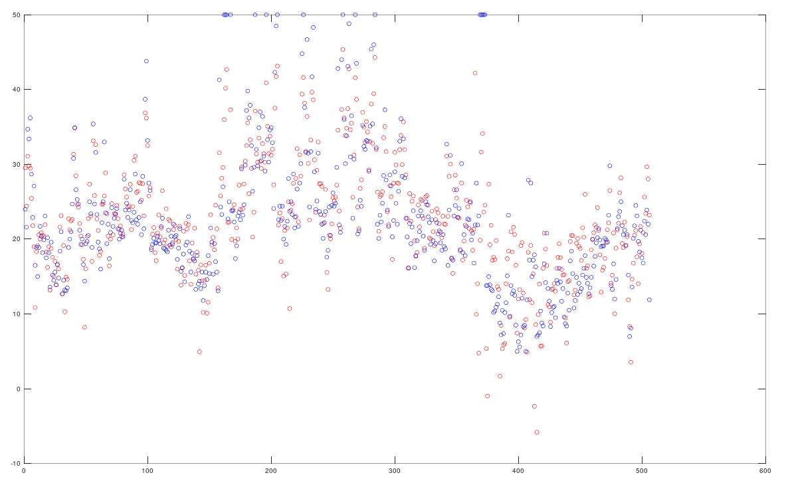

Corrective Batch Gradient Descent was a simple algorithm I created that performs regressions without needing hyperparameters.
The complete research paper detailing this algorithm is available here.
As a test, I ran this algorithm on the 'Boston Housing' dataset available on the Data for Evaluating Learning in Valid Experiments (DELVE) project at the University of Toronto CS website.
The details of this project are available here
The goal of this project was to predict the median value of owner-occupied homes in Boston on the bases of several factors:
The results of this project are available below:
The overall squared error cost of the result and the training set is 11.963145016778741

The blue line represents the actual values and the orange line represents the values predicted by my algorithm.
The Y axis denotes the median value of owner occupied homes in Boston in $1000s.
The X axis denotes the ith test case from 1 to 506.

The blue dots represents the actual values and the red dots represent the values predicted by my algorithm.
The Y axis denotes the median value of owner occupied homes in Boston in $1000s.
The X axis denotes the ith test case from 1 to 506.
The main algorithm in Java is available below:
public static double[] gradientdescent(double[] vals, int n, double tests[][], double y[], double alpha, double initcost){ double mod[] = new double[vals.length]; double cost = 0; int iter = 0; do{ iter++; for(int i = 0;i<tests[0].length;i++){ mod[i] = vals[i] - (alpha * derivative(n, tests, y, vals, i)); } cost = costfunction(y, mod, tests, n); if(cost>initcost){ alpha/=2; continue; } for(int i = 0;i<tests[0].length;i++){ vals[i] = mod[i]; } initcost = cost; continue; } while(iter<5000000); return mod; }